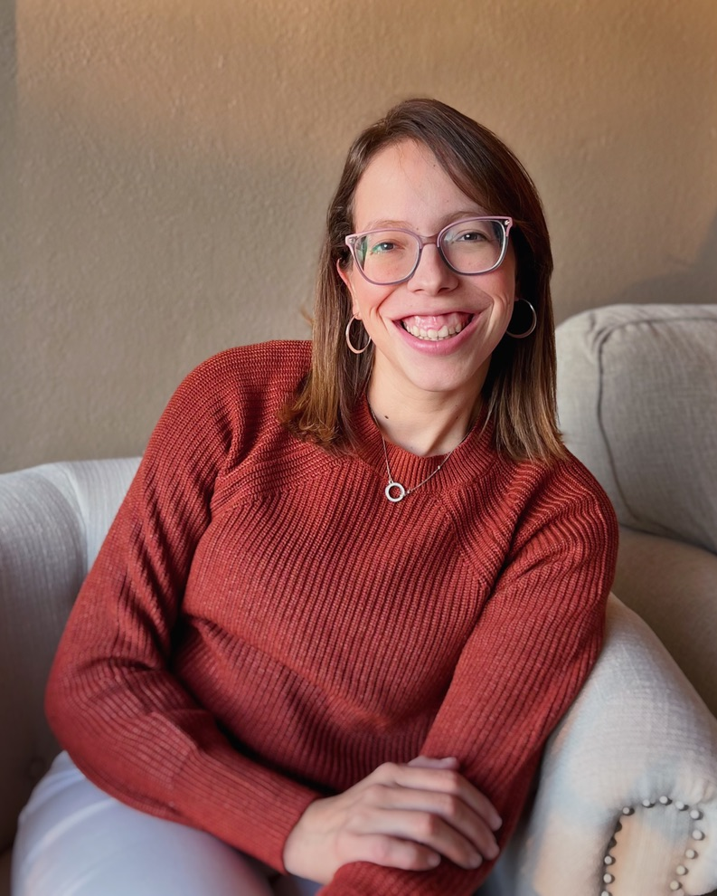

Tatiane Cardoso Shih

Summary
A happy and curious women with a big desire to find ways to improve life of people in need.
Education
B.S. Psychology - University Anhanguera Educacional, Brazil. (2014 - 2018)
Experiences
Personal Assistant
Independent contractor San Diego, CA. February 2022 – January 2023
● Managed team schedules, and implemented improvements to promote team development and productivity;
● Successfully organized and prioritized crucial tasks, including scheduling appointments, meal preparation, and identifying areas for improvement in daily operations. Proactively addressed and resolved issues to ensure optimal team performance and productivity.
● Implemented best practices for online calendar usage and email communication, improving communication in the team.
Child Care Specialist
Au Pair Care INC. Sacramento - CA August 2019 - September 2021
● Provided essential support and guidance to families with neurodivergent children to promote their development and wellbeing in daily life;
● Collaborated effectively with cross-functional teams, demonstrating communication skills, and working in a high-demand 24/7 environment;
● Managed daily schedules with attention to detail, ensuring efficiency and better productivity.
Administrative Assistant
Jockey Club SP São Paulo, Brazil January 2017 - June 2019
● Provided organized, and friendly support as an energetic front desk receptionist, offering a safe environment and quickly solving problems while managing high demand phone calls and using two way radio codes.
● Proficient in managing inventory, handling phone duties, and managing company correspondence to maintain effective communication across all departments in the company.
● Cultivated a warm and inviting atmosphere, consistently delivering exceptional customer service and looking for positive relationships with clients and team members.
Languages:
Portuguese - Native
English - Fluent
Spanish - Basic.
Skills:
Human Behavior Analysis; Data analysis, Human development; Proactive; High organizational skills; Communication skills..
Awards and Certifications:
● Recognized for outstanding leadership skills in organizing and coordinating a successful event, the
Psychology Week. Including planning meetings, searching for partnerships, documenting
the event through photography, and recruiting guest speakers for lectures.
● Actively participated in a Therapy Social Group dedicated to promoting Mental Health Awareness by
supporting people, delivering impactful lectures and offering a no cost therapy.
● Board Certified Autism Technician - valid until Feb - 2025.
● CPR + First Aid+BLS - Valid until Feb 2025.
Contact Me Here!
© Tatiane Cardoso Shih. All rights reserved.